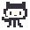

Mona Crossing
Little hops. Clean commits.
Five gardens. One brave Octocat.
How to cross
Arrows / WASD hop one tile. On touch, tap the pad. P / Escape pauses; M toggles sound. Click or tap the playfield to focus it inside a cabinet.
The cream sidewalks and mint median are safe. Avoid bug vehicles and conflict trucks. Stay on floating commit logs and PR ferries in the aqua river. Deliver to each empty garden marked main; a filled garden cannot accept another delivery.
Three hearts, 40 seconds per crossing. New ground earns points once per delivery, and a quick arrival earns a bonus. Five deliveries open the next round. Losing a heart resets your crossing, not your filled gardens. The game pauses when you leave the tab.